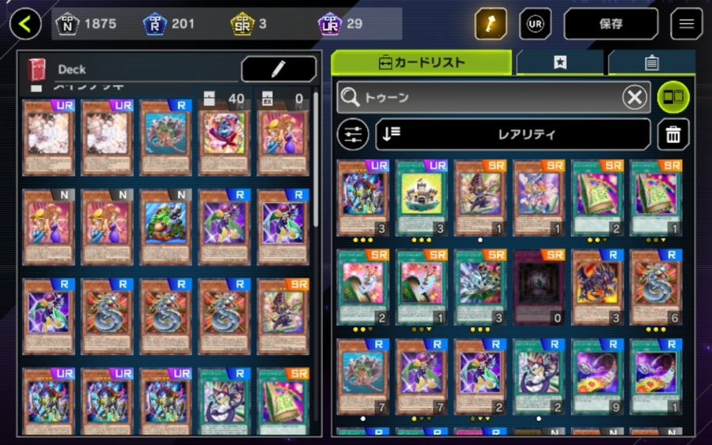
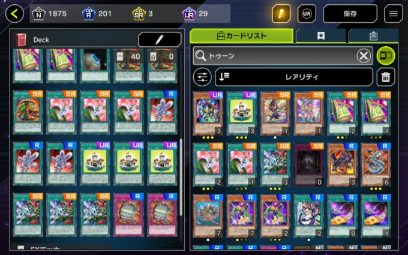

ハロー！読者ボーイ＆ガール！
ミーの名前はペガサス・J・クロフォード
マジック＆ウィザーズの生みの親デース
今回ランクマッチを戦う為に使うトゥーンデッキ
最初は様子見のためにトゥーンカードを多めで誘発はそれほど多く入れませんでした
私自身、実際のカードゲームでのトゥーンの強みがまだそれほど分かっていないため
あれこれ試す為にこの構築にしておりマース
ミーの名前はペガサス・J・クロフォード
マジック＆ウィザーズの生みの親デース
今回ランクマッチを戦う為に使うトゥーンデッキ


私自身、実際のカードゲームでのトゥーンの強みがまだそれほど分かっていないため
あれこれ試す為にこの構築にしておりマース
以下、私の闘いのロードデース
| 1試合 | 魔鍵 | 勝利 |
| 2試合 | ヴァンパイア | 勝利 |
| 3試合 | 霊獣 | 勝利 |
| 4試合 | ウィッチクラフト | 敗北 |
| 5試合 | 十二獣鉄獣 | 敗北 |
| 6試合 | フォトン | 勝利 |
| 7試合 | 勇者プランキッズ | 敗北 |
| 8試合 | ブラックマジシャン | 勝利 |
| 9試合 | RR | 敗北 |
| 10試合 | 閃刀姫 | 敗北 |